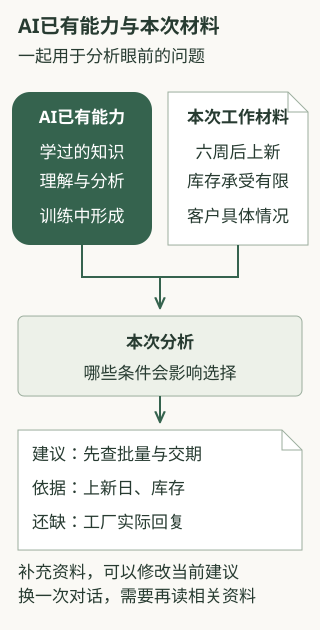
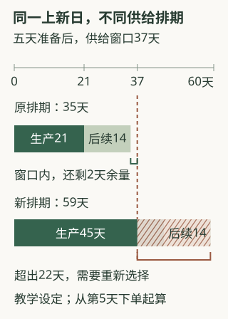

AI怎样参与专业判断
本章内容
企业使用AI，常常从查资料、写摘要开始。再往前一步，AI能否帮助我们分析问题、比较选项，准备一份有依据的建议？要理解这种能力，先要看清专业人员在判断时做了什么。
我们可以通过一家咨询服务公司的工作，来了解这个过程。
以下咨询公司、业务数字和AI答复均为教学示例，用来说明分析可以怎样展开，并非真实企业的应用记录或某个AI产品的测试结果。
一、同一个客户问题，两种处理思路
这家公司有六名研究人员，为二十家家居品牌提供行业研究，按月交报告，再与客户讨论经营问题。两名资深顾问熟悉客户的商品、供应商和销售渠道，重要判断通常需要他们参与。
例如，一家做桌面收纳产品的品牌计划六周后上新，负责人向咨询公司提问：“最近都在谈收纳升级，我们要不要跟一款？”
研究员先把这个问题理解为：客户想了解最近流行什么产品。于是，他搜集新品介绍，希望查清同行推出了什么、强调哪些卖点，再把这些资料整理给客户，为新品选择提供参考。
但资深顾问还有其他的看法：了解同行在做什么，还不足以回答客户“要不要跟一款”的问题，接下来要判断这个方向是否适合客户自己的生意。他熟悉这家客户的经营情况：它主要服务小户型顾客，擅长与工厂做小批量调整，也承担不起太多库存。因此，他更关心，这家品牌能否在控制库存的前提下，尝试一款适合顾客、又来得及上新的产品。
为了作出这个判断，顾问会先确认新品要解决顾客的什么问题，判断跟进这个方向是否有意义；再问工厂最少接受多少套订单，看看客户能否承担这批库存；还要核对了解顾客意愿、生产和备货各需要多久，看看能否赶上六周后的上新。这几项条件，会决定接下来查哪些资料、考虑哪些产品，以及哪些方案应当排除。
两人都需要找资料，但资料要为不同层次的问题服务。新品介绍回答“市场上有什么”，客户情况、供应条件和排期则帮助回答“我们可以做什么、值不值得做”。顾问的经验，体现在他能把后一类问题提出来，并据此组织调查和比较。
由此，我们可以形成一个认识：专业判断的价值，在于把信息与具体目标、经营条件和行动选择联系起来，形成有依据的建议。
如果AI能帮助提出这些问题、对照材料比较选择，它就可以参与原来需要专业人员准备的一部分分析。但人的工作值得这样做，还不足以说明AI就能做好。接下来要弄清楚：AI为什么能分析一个没见过的客户问题？它知道哪些事，还需要我们提供什么？
二、AI为什么能对一个新问题展开分析
前面，资深顾问从客户的经营情况出发，提出了需求、库存和时间等问题。AI第一次接触这家客户时，也可能提出类似的追问。它从哪里学会了这样分析？
我们在对话软件里输入问题时，负责理解文字、形成回答的核心部分，通常称为语言模型。日常交流中说的“模型”，在这里指的就是它。下面先看它为什么能够根据文字要求开展分析。
AI在投入使用前，已经通过大量文字材料进行学习，这个过程称为训练。材料中既有知识和事实，也有解释问题、比较方案、说明理由的内容。通过训练，AI逐渐具备了理解提问、联系相关知识、组织分析和回答的能力。因此，我们向它提出一个新问题时，它不必先找到一份完全相同的现成答案，也能尝试分析。
以这次上新为例。“生产和运输需要时间”“大量进货会占用资金”都是可以用于许多企业的一般认识。当我们告诉AI“六周后上新”，它就可以把这个期限与生产、运输所需的时间联系起来，提醒我们先查交期；当我们补充“承担不起太多库存”，它又可以据此提出：先了解工厂接受多小的批量。
这里，AI把一般知识用到了眼前的问题上。客户可以是一家它从未接触过的企业，但时间、库存和供给之间的关系，仍然可以帮助它提出调查方向。这也是我们可以尝试让AI协助分析的原因：它能把相关知识组织起来，帮助我们从一句笼统的提问，继续追问哪些事情会影响选择。
不过，提出了合适的问题，并不等于已经知道答案。AI可以提醒我们查交期，却还不知道这家工厂实际需要多少天；它可以建议调查小批量方案，却不能据此认定工厂已经接受三百套起订。这些情况需要从客户和工厂的实际材料中取得。
有了具体材料，分析才能再往前走：工厂的交期是否赶得上，批量是否承受得起，哪种产品值得先拿样品问顾客。AI可以帮助比较这些条件、解释理由；我们则需要检查它是否用对了事实，比较和计算是否成立。
因此，接下来要把两件事接起来：AI已经学到的一般知识与分析能力，以及这家企业正在面对的具体情况。前者让它能够开始分析，后者让分析有机会回答客户真正的问题。
三、怎样让AI用上这家企业的情况
资深顾问了解客户，是长期交往和共同工作的结果。AI第一次处理这家客户的问题时，还没有这些交往经历。我们需要告诉它正在帮助谁、要作什么决定，并让它读到有关材料。
例如，我们先告诉AI：客户六周后要上新，承担不起太多库存，需要判断哪个产品方向值得继续调查。随后，再把顾客反馈、工厂回复和经营安排提供给它。我们还可以交代公司的分析要求：建议要说明依据，买不买、做不做，要同时考虑顾客需要和客户能否承担。
这些供AI在本次工作中使用的信息，通常称为上下文。这个名称指的是它这一次能看到的任务说明、资料和前后对话。对新品任务而言，我们至少要补充三类内容。
| 交给AI什么 | 本例中的内容，以及它的作用 |
|---|---|
| 要帮助谁作什么决定 | 为这家品牌判断本轮上新值得调查哪个方向。这样，AI才知道要帮助客户作选择，而不只是介绍行业趋势 |
| 客户和业务的实际情况 | 顾客反馈、工厂回复、成本、库存承受能力和上新日期。这些事实会影响哪些产品做得成、哪些安排承担不起 |
| 公司希望怎样分析 | 把每项建议的依据说清楚；没有材料支持的想法列为待调查；比较产品时同时考虑需求、库存、收益和时间。这样，分析才符合公司的工作要求 |
这也解释了为什么只对AI说“帮我看看新品趋势”，可能只得到一份趋势介绍。AI还不知道客户准备作什么决定，更不知道哪些经营条件会影响选择。把这些交代清楚后，我们才能进一步要求它比较：哪些方向值得调查，理由是什么，还缺什么资料。
对于六周后上新、承担不起太多库存的客户，交期和最小订货量可能直接决定能不能做；换成准备期很长、资金充足的企业，比较的重点又会变化。AI已有的知识帮助它分析这些关系，本次材料则告诉它，眼前究竟是哪一种情况。

材料可以怎样交给AI？最直接的做法，是在对话中说明任务，附上相关资料，或贴出需要分析的原文。若使用的AI产品已经接通公司资料库，也可以让它查找有关记录。例如，先找到工厂最近一次回复，再把回复用于比较交期。这些查询功能能否使用，要看具体产品是否已经接好资料来源。
无论怎样提供，都要注意：文件保存在某处，与AI这一次读到了文件内容，是两件事。聊天软件可以替我们保存许多文件，但分析时仍要把相关内容交给模型。我们可以要求AI说明采用了哪份工厂回复、其中怎样描述交期，再对照原文检查，避免它用了旧回复，或根本没有读到这条信息。
给AI补充一份新回复，它可以据此修改这一次建议；但这不等于它以后自动记得公司的全部情况。下一次再做分析，仍要让它读到相关资料。产品如果能保存和查找历史记录，可以帮助完成这件事；如果没有这项功能，就需要我们重新提供。
现在回到收纳产品。我们已经知道，AI可以先用一般知识帮助提出问题，再根据实际资料继续比较。下面沿着研究员与AI的几轮交流，看看一份建议怎样逐渐具体起来。
四、同一问题中，AI的分析怎样逐步展开
先让AI帮助明确调查问题
最初，研究员只把客户的提问和上新时间告诉AI。他可以这样交代任务：
我们是一家做桌面收纳产品的品牌，计划六周后上新。最近同行在讨论收纳升级，请帮助判断是否值得跟进一款新品。先说明需要了解哪些情况，以及它们怎样影响选择；已有信息不足时，保留问题，不替我们编造事实。
AI可以先列出要调查的事情，并说明为什么要问，例如：
先确认目标顾客有哪些尚未解决的使用问题，这会影响应调查哪类产品。
再问现有工厂能提供什么样品，最少接受多少套订单，需要多少天生产。这样才能知道，有没有机会先做一小批。
同时要了解预期售价、成本，以及客户愿意投入多少钱、承受多少库存。六周后就要上新，还要把调查、生产和备货所需的时间排在一起看。
目前可以形成调查计划，具体推荐方向还要结合这些材料。
AI这时尚未读到顾客反馈和工厂回复，已经可以帮助团队把“要不要跟一款”拆成能调查的问题。研究员可以据此问客户、找记录、联系工厂，再把取得的材料带回来。双方的工作就从一句模糊提问，向一项可以继续开展的调查推进了。
不过，问题列得多还不够。每个问题都要能说明，它会影响客户的哪项选择。库存条件影响批量，顾客的使用问题影响产品方向，交期影响本轮是否做得成。建立这些联系，调查才有重点。
加入企业材料，形成有条件的建议
研究员随后把查到的材料和客户情况交给AI：
| 材料 | 本次已知内容 |
|---|---|
| 八款同行新品介绍 | 多数强调更大容量、可叠加；材料未提供实际销量 |
| 现有32厘米宽收纳架的退货说明 | 四十条说明中，十七条提到桌面放不下；材料范围是退货用户 |
| 工厂回复 | 有22厘米宽样品；最少三百套才接受订单，生产二十一天，单位成本比原产品增加八元 |
| 客户情况 | 主要服务小户型顾客，本轮不愿承担两千套库存；具体进货预算和最多能接受多少库存，还没有确认 |
| 上新日期 | 从讨论当天起，四十二天后上新，即六周后 |
| 工作安排 | 先用五天取得样品、核对价格，并做初步购买调查，之后才决定是否下单；生产后还需十四天运输和门店准备 |
这时，研究员可以请AI判断，哪种产品值得先拿样品给顾客看。具体做法是让顾客看到样品和预期售价，了解它能否解决使用问题、愿不愿意买，以及为什么。这里把下单前的这一步称为“验证”：先用小范围调查检验想法，再决定是否投入。五天内开展的是初步调查，还不能保证此后一定卖得好。
结合现有材料，AI的一份建议可以是：
优先验证22厘米宽版本，而不是直接跟进更大容量。
退货说明提示一些顾客遇到空间问题，而同行主要强调更大容量，两者不完全一致。先拿22厘米宽样品，了解它能否放到目标顾客的桌上、容量是否仍然够用，比直接跟进大容量更值得优先调查。
工厂已有样品，三百套的订单也比两千套小，存在先做一小批的可能。但三百套究竟需要多少进货款、卖不完会留下多少库存，还要请客户确认能否承担。
单位成本增加八元，还要结合售价和其他销售费用，算清一套卖出去能留下多少收益。顾客认为更省空间，也未必愿意按预期价格购买。
按当前先调查、再生产、最后运输备货的安排，五加二十一加十四，共四十天，距第42天上新只留两天余量。调查需要更多时间或前面出现延误，都可能赶不上原定日期。
这份建议采用了不同材料，但没有把它们都当成同一种证明。退货说明帮助发现要调查的问题；样品和最小订货量说明工厂提供了什么选择；成本和售价关系到能否赚钱；生产和备货时间则决定能否赶上这次上新。
尤其要留意那十七条退货说明。这四十条说明只包含退货顾客的反馈，留下产品的顾客和还没买过的人，都没有包含在这组记录里。因此，我们可以据此追问“空间不够是否妨碍购买”，却还不能断定多数目标顾客都想要窄款，更不能据此推算能卖出多少。
同样，工厂愿意做三百套，只说明有这种供给选择；顾客是否愿意买、客户是否承担得起，是另外两项要确认的事情。把这些区别说明白，团队才知道下一步应该问谁、看什么，取得什么结果后才能讨论下单。
AI在这一轮的帮助，也因此具体起来：它把几份分散材料放在同一个决定下比较，提出优先调查的方向，并说明尚缺哪些依据。研究员和顾问可以沿着这些理由继续核对，而不只是收到一段“建议小批量试销”的结论。
新事实出现后，重新检查原建议
两天后，研究员收到工厂的新回复：生产周期从二十一天改为四十五天。他把新回复交给AI，请它对照原来的上新日期和工作安排，重新检查建议。
在这个教学安排中，五天的前期工作已经用了两天，还需要三天。AI的修订可以是：
原上新安排需要重排。距第42天还剩四十天，样品、核价和验证预计还需三天，加上四十五天生产和十四天后续准备，剩余工作共六十二天，超出窗口二十二天。
如果仍用这家工厂，就要讨论延后上新。如果上新日期不能变，可以调查其他工厂是否来得及供货，但需要重新取得成本、品质、最小订货量和交期资料。也可以继续拿样品了解需求，暂时不向顾客承诺交付日期。
这里，AI要做的并不是把原建议重新写一遍。它需要用四十五天替换原来的二十一天，重新算出后果，再说明哪些选择发生了变化。研究员也可以按这些步骤核对，看看它有没有漏算前期工作或仍然沿用旧交期。
产品方向是否值得调查，与这家工厂是否赶得上，是两个相关但不同的问题。新交期并没有说明顾客不喜欢窄款，却已经使原来的按时上新安排无法成立。我们仍可继续了解需求，同时重新考虑供货或上新日期。
展开核对这组时间计算
以第一次讨论为第0天，计划在第42天上新。原安排是五天取得样品、核价和调查＋二十一天生产＋十四天运输备货＝四十天，留两天余量。
第2天收到新回复时，距上新还剩四十天，前期工作还需三天。三加四十五加十四＝六十二天，比剩下的四十天多二十二天。
从第0天看，改后的完整安排是五加四十五加十四＝六十四天。若到第5天才下单，当时距上新还剩三十七天，而生产和运输备货共需五十九天，同样超出二十二天。
下图从第5天下单时起算，比较下单后还需要的时间。横向长度表示天数，竖虚线表示原上新日；它不把前五天再次计入。

同一个任务可以这样继续讨论下去：研究员把调查结果带回来，AI帮助比较；又有新事实，就重新检查受影响的建议。团队每次都能对照具体材料追问，分析为什么这样变、还有什么选择。
五、怎样判断AI是否真的帮助了分析
看到一份条理清楚的建议，我们还需要检查，它有没有帮助当前的决定。收纳架的例子可以提供几项具体判断。
建议有没有回答客户的问题
客户要决定是否跟进新品。如果AI只整理容量、材质、造型和同行卖点，团队获得了资料准备，但还没有得到针对这项决定的分析。
我们可以继续问它：“结合这家客户的顾客、库存和上新日期，先调查哪类产品更有意义？理由是什么？还缺什么才能决定下单？”如果回答仍然只在重复流行卖点，说明分析尚未用上客户的情况。若它能说明为什么先看窄款、如何确认购买意愿、哪些费用和时间仍待核实，团队才有了可以继续工作的建议。
这也不是篇幅越长越好。一个十页的趋势概览，可能仍把具体取舍留给客户；一份较短的建议，如果说明了需求线索、供给条件和待查问题，反而更容易被团队继续使用。
一般认识与具体事实有没有混在一起
假设AI给出这样的结论：
小户型顾客愿意为节省空间多付八元，所以紧凑版本的收益没有问题，可以直接下单。
“节省空间可能有价值”是一个值得调查的想法，但材料没有提供顾客愿意多付八元的证据，也没有给出完整售价和收益要求。把这个想法直接写成客户事实，后面的下单建议就失去了依据。
可以采用的表达应当把调查继续向前推进：
紧凑版本可能满足一部分顾客的空间需要。请让目标顾客同时看到样品与预期价格，了解购买理由，再结合实际成本检查收益；这些结果会影响是否下单。
AI有时会把一个看似合理的猜测，写成已经知道的事实。句子读起来很顺，也没有新增任何顾客调查的证据。检查时，可以让它指出“愿意多付八元”来自哪份材料；如果找不到，这就应该保留为待调查的问题。AI仍然可以帮助提出想法和安排调查，但下一步的决定要根据实际查到的结果继续形成。
条件改变以后，取舍有没有跟着改变
工厂交期从二十一天改为四十五天以后，如果AI仍然说能按原安排上新，就没有正确使用新事实。我们可以直接检查：它用了哪一个交期，有没有重算总用时，延后上新和另找工厂是否需要重新比较。
换一家客户也是同样的道理。假设另一家品牌服务的是办公大桌面用户，顾客更重视容量，工厂只有两千套起订。原案例里的22厘米和三百套，就不能直接成为这家客户的推荐标准。
AI仍然可以采用前面的分析方法：调查顾客的使用问题，比较供给、成本与时间，检查库存承受能力。但这次“两千套”是否过大，需要了解新客户的经营条件；资料还没有给出，就应保留这个问题。能够沿用的是分析方法，具体结论要根据新任务重新形成。
专业人员检查AI的工作，也是在检查这些联系。事实能否找到来源，推导是否使用了正确条件，建议是否真正回答当前问题，比回答看起来像不像一位专家更有用。
六、换一种业务，练习怎样让AI参与判断
一家为工业设备提供维修保养的企业服务三十家工厂，保存了三百五十份维修记录。客户最关心的是尽快恢复生产。企业熟悉几类老设备，也能协调备件和现场人员。两名老师傅经常在报修电话里追问现象，再决定带什么零件、派谁去。
负责人希望“让AI自动诊断故障”。但现有记录往往只写换过哪个零件，没有写清故障怎样发生、检查过什么，也没有可靠地说明故障原因。
请结合本章的解释，回答三个问题：
- 现阶段可以先让AI协助哪一段工作？把“自动诊断故障”改写成一个目标更清楚、已有材料能支持的任务。
- AI可以先提出哪些待查问题？它需要取得哪些当前事实，这些事实分别会影响什么？
- 如果AI回答“以前有维修记录提到换过这个零件，因此本次也应更换”，这项建议跳过了哪些判断？
展开一份参考分析
可以先让AI帮助整理报修情况，准备老师傅作判断所需的资料。任务可以写成：
请根据本次报修情况和我们提供的维修记录，列出还需要追问的问题，找出可能相关的过去记录，并说明出发前要核对哪些备件和人员信息。请准备一份供老师傅讨论的出发建议，写清依据。没有提供的资料列为待补，尚未确认的原因不要写成诊断结论。
AI可以先列出要问清的事项：是哪种设备，出现什么现象，最近修过哪里。设备型号和现象，会影响应该参考哪些过去记录；近期维修情况，有助于判断本次问题是否可能与之前的工作有关。接着还要核对所需零件是否有货、哪些人员能够出发，这些情况会影响带什么、派谁去。具体还需要问什么，由熟悉设备的人继续补充。
三百五十份维修记录可以帮助查找类似情况，但“以前换过这个零件”还没有回答三个问题：当时的问题是否真的由这个零件引起，换完以后是否解决，本次设备和故障现象是否相同。要提出更换建议，还需要本次检查发现与适用的维修知识。AI可以协助找记录、提出追问和比较情况，现场检查与原因确认则由具备相应专业能力的人完成。
这与收纳产品的分析有一项共同点：AI能够先帮助提出问题，但具体建议需要由当前事实支持。维修记录多，并不能补上没有记录的故障原因。随着设备资料、检查方法和实际记录逐渐充分，企业才有条件进一步研究，怎样让AI协助更深入的故障排查。
回到咨询公司的例子，我们现在可以更具体地理解“AI起到类似资深顾问的作用”所指的工作：帮助澄清要作的决定，提出值得调查的问题，把事实与条件联系起来，比较选项，并在新信息出现后修订建议。
企业可以据此尝试新的分工。例如，在这家咨询公司，研究员可以先借助AI明确调查方向、对照材料，准备一份有理由、有待查问题的建议，再和资深顾问讨论。顾问由此可以针对具体依据追问和修正，团队也可以据讨论结果继续调查。实际使用时，要检查AI有没有做到这些工作，再决定哪些任务适合这样安排。
如果希望每天、每周都这样工作，接下来还会遇到新的问题：怎样让AI每次都读到最新客户资料，怎样接上前一次的调查，以及怎样让不同人员共同使用这些分析。先看清AI在一次任务中怎样参与判断，才能继续讨论这些工作怎样在企业里长期开展。
案例与参考资料
本章的咨询公司、经营数字、设备维修情境、任务说明和AI答复均为教学构造。对话用于展示一段分析应当怎样被理解和检查，没有把示意写成某个模型的实测结果，也没有声称企业已经获得经营成效。
关于语言模型能够根据任务说明和示例处理不同问题、无需每次都重新训练，参考《Language Models are Few-Shot Learners》。这里采用的是能力形成与本次材料使用的区别，不用它评价当前产品的能力排名或企业应用效果。
关于本次任务、对话和查到的资料怎样共同参与分析，参考Anthropic的《Effective context engineering for AI agents》与项目已保存的《Building effective agents》原页。本章用新品任务解释这些关系，没有要求采用特定产品。
本项目保存的AI协作课程《模型如何生成回答》与《上下文包是什么》也用于对照解释。需要继续了解相关机制时，可以从这两份材料延伸阅读。